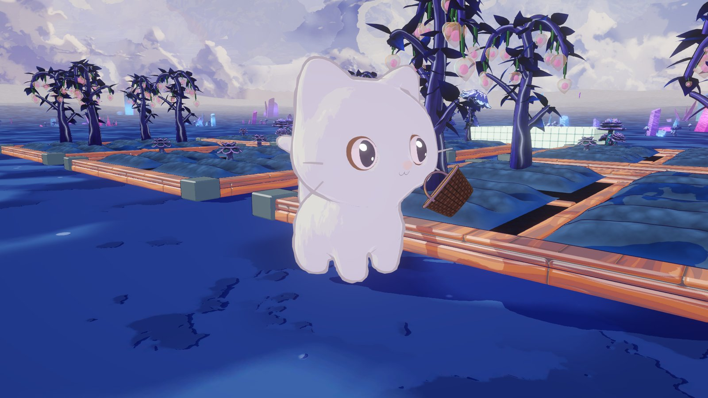
1차 평가에서 만든 외계인 손님 · 등불 열매 · 가게 문과, 그 전부터 개인 프로젝트로 직접 만들어 온 외계 행성 들판(하늘, 구름, 지형, 수정, 버섯, 호수)이 있었습니다. 이 에셋들이 "살아 있는 곳"처럼 보이도록, 가장 단순한 농장 가게 놀이를 하나 얹었습니다.
플레이어는 바구니 손잡이를 입에 문 작은 고양이입니다. 밭에서 등불 열매와 버섯꽃을 수확해, 가게 문 앞에 차례로 찾아오는 손님의 주문을 채웁니다. 오후 2시에 시작해 밤 10시가 되면 끝나고, 그 사이 하늘이 실제로 저물어 남은 시간을 눈으로 느끼게 했습니다.
밤 10시 전에 500원을 벌면 성공, 그 전에 밤이 오면 실패입니다. 수확한 작물은 잠시 뒤 다시 자라서, 어떤 작물부터 수확할지 길을 고르는 재미가 생깁니다.
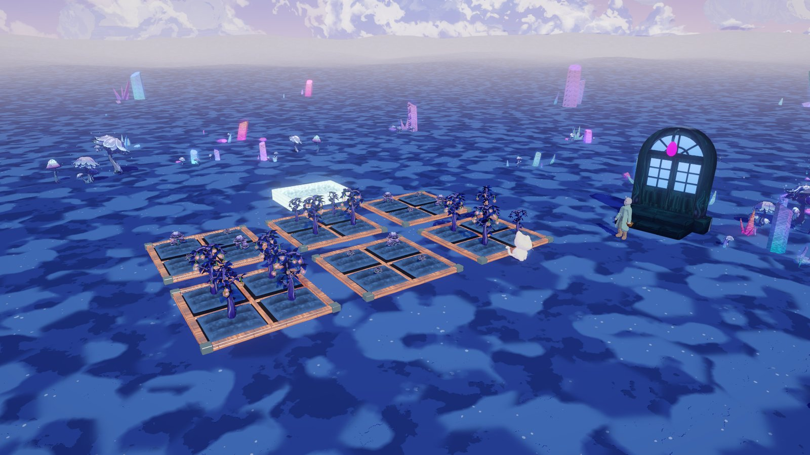
| 에셋 | 어디서 | 게임에서 |
|---|---|---|
| 외계 행성 들판 | 1차 이전 개인 프로젝트에서 직접 제작 (하늘 · 구름 · 지형 · 수정 · 버섯 · 호수 · 낮/밤) | 배경 씬을 그대로 가져와 스테이지 바탕으로 |
| 밭 | 팀 프로젝트용으로 만든 두둑 + 칸 흙 | 2×2칸 밭 6개, 칸 24개 |
| 등불 열매 나무 | 1차 제출 에셋을 다시 모델링 · 리그 · 수확 애니 | 수확하면 열매가 꽃봉오리로, 다시 열림 |
| 버섯꽃 | 팀 작물 에셋 | 수확하면 사라졌다 땅에서 다시 자람 |
| 외계인 손님 | 1차 제출 에셋 (얼굴 리토폴 · 옷 · 리그) | 주문 손님, 옷 색만 바꿔 계속 등장 |
| SD 고양이 | 1차 이전 개인 작업, 직접 박스 모델링 · 리그 | 플레이어 (IK/FK 다리, 질주 애니) |
| 가게 문 | 1차 제출 에셋 (Varco 생성 후 정리) | 손님이 나오고 들어가는 문 |
| 바구니 | Varco(AI) 생성 후 정리 | 고양이 입의 바구니 |
모든 오브젝트는 프리팹으로 두고, 게임 스크립트(수확 · 납품 · 바구니)는 프리팹에 컴포넌트로 붙였습니다. 모델은 Blender에서 FBX로 내보내고 같은 GUID로 덮어써서, 모델을 고쳐도 씬 연결이 끊기지 않게 했습니다.
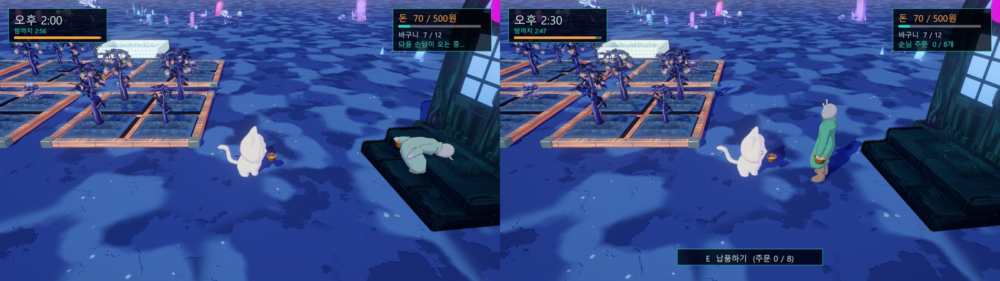
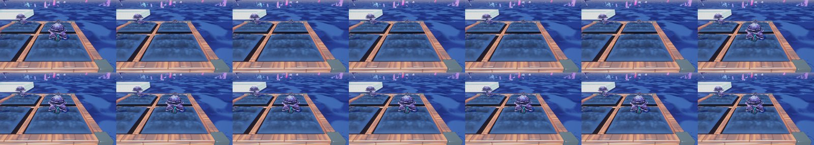
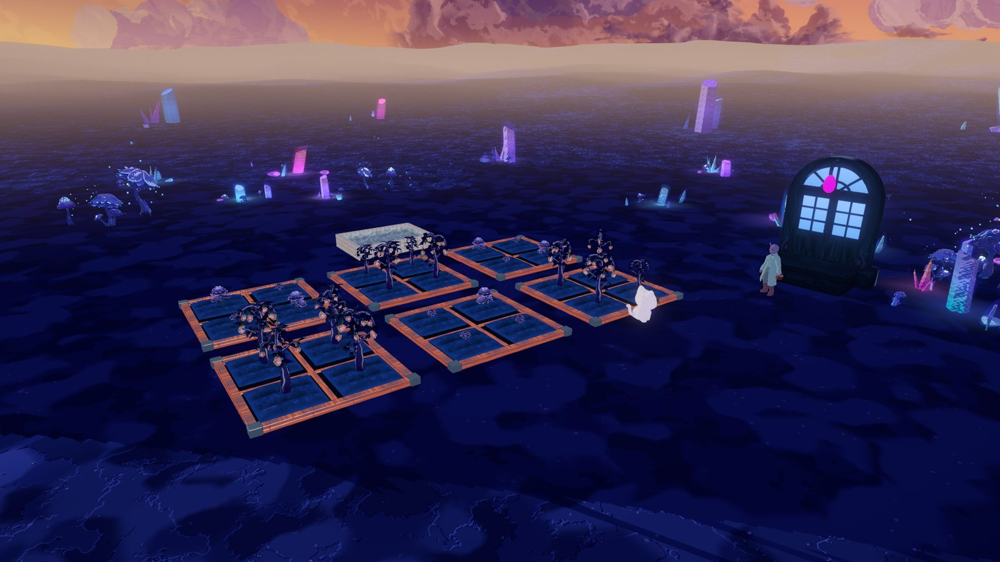
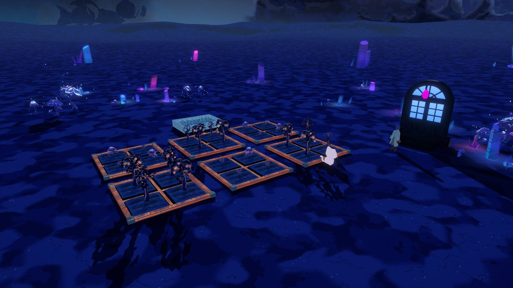
배경과 함께 직접 만든 낮/밤 시스템(태양 · 구름 빛 · 안개 · 포자 · 밤 후처리)을 게임 시계에 연결했습니다. 시간이 흐르면 하늘과 조명이 함께 저물어, 화면만 봐도 남은 시간을 알 수 있습니다.
고양이 뒤 위쪽에서 따라가는 3인칭 카메라입니다. 마우스 오른쪽 드래그로 돌리고 휠로 줌합니다. 이동 방향은 카메라 기준이라 어느 쪽을 보든 W가 "화면 안쪽"입니다.
| 입력 | 동작 |
|---|---|
| W A S D | 카메라 기준 이동, 고양이가 이동 방향으로 돌아섬 |
| Shift | 달리기 |
| E / Space | 익은 작물 수확 · 손님에게 납품 (가까이 있을 때 화면 아래 안내) |
| 마우스 오른쪽 드래그 · 휠 | 카메라 회전 · 줌 |
| Esc · R | 일시 정지 · 처음부터 |
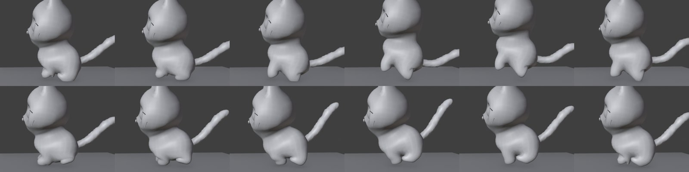
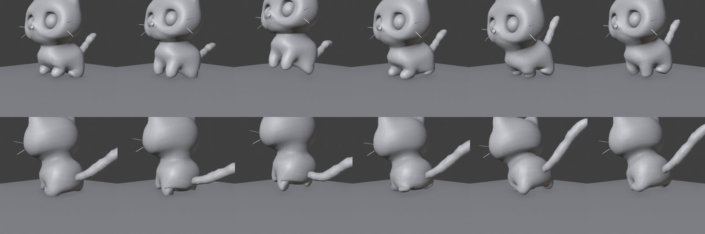
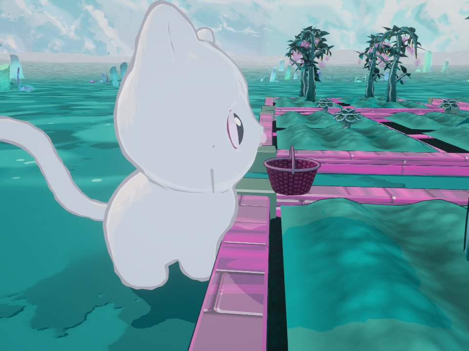
| 규칙 | 내용 |
|---|---|
| 수확 | 익은 작물 앞에서 E. 등불 열매는 열매 3개, 버섯꽃은 1개. 바구니는 12개까지 |
| 다시 자람 | 등불 열매는 꽃봉오리로 돌아갔다 다시 열리고, 버섯꽃은 사라졌다가 땅에서 다시 솟아남 |
| 손님 주문 | 손님마다 열매 4~9개를 주문. 바구니에서 주문에 필요한 만큼만 가져감 |
| 돈 | 열매 1개 10원, 주문을 다 채우면 보너스 20원. 화면에 "+n원" |
| 다음 손님 | 돈을 낸 손님은 가게로 들어가고, 옷 색이 다른 손님이 문에서 나옴 |
| 승패 | 밤 10시 전에 500원이면 성공, 아니면 실패 |
시연 모드로 한 판을 돌려 보면 약 1분 20초에 손님 6명을 받고 500원을 넘겨 성공했습니다.
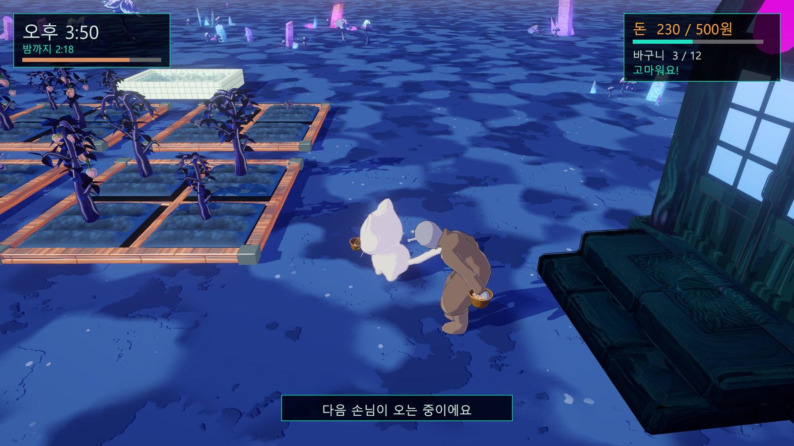
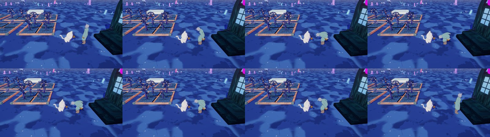
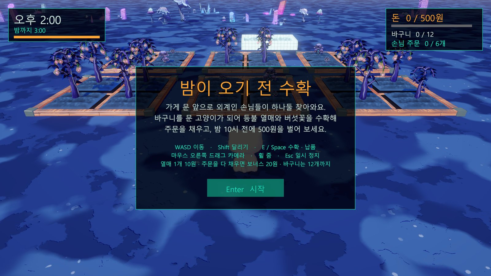
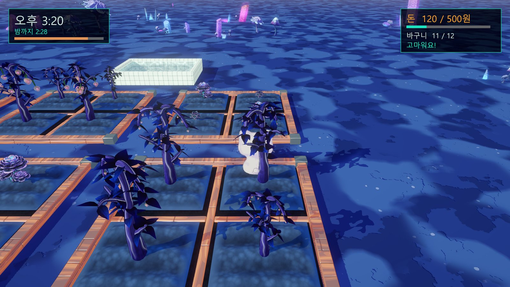
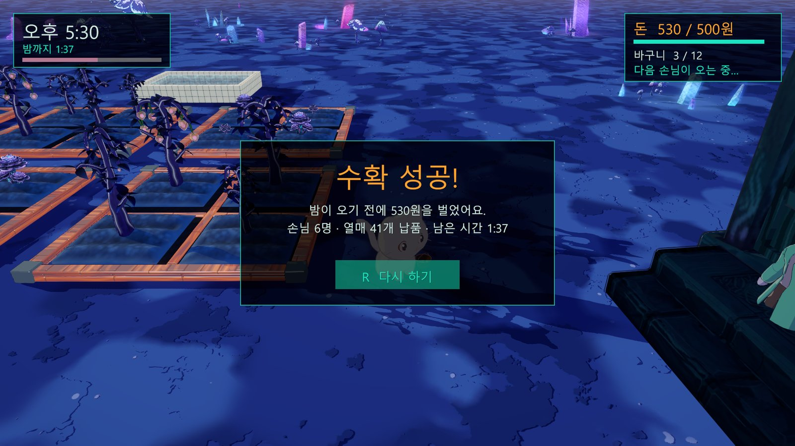
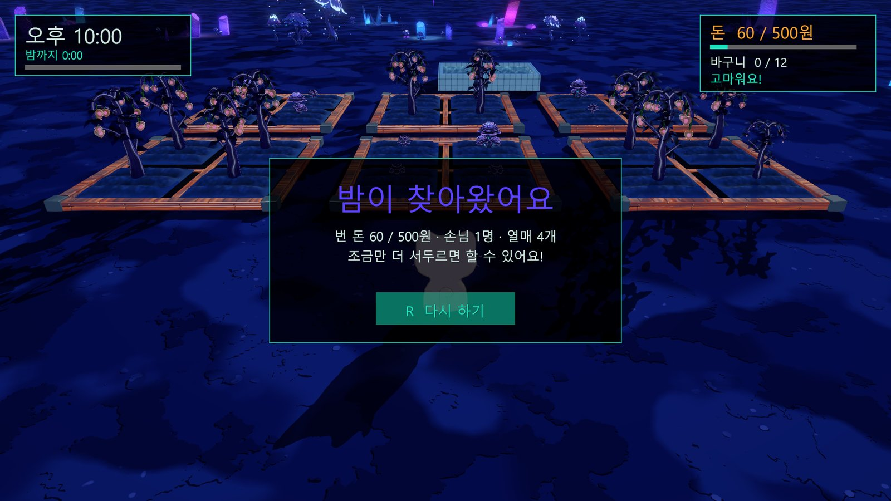
UI는 코드로 생성해서 씬에는 컴포넌트 하나만 둡니다. 한글은 Windows 기본 글꼴(맑은 고딕), 색은 팀 팔레트(심연 · 시안 · 금빛 · 보라)를 썼습니다.
Docs/DevLog.md에 기록하고 이미지 26묶음을 Docs/Media에 남김게임 방향, 조작감, 동작의 느낌("박차고 달리는 고양이", "손님은 옷 색만 바뀌게")은 제가 정하고, AI는 그것을 코드 · 리그 · 애니메이션으로 옮겼습니다. 결과가 마음에 들지 않으면 그 자리에서 이유를 말해 다시 고치게 했습니다.
| 내 요청 (프롬프트) | AI가 만든 것 · 고친 것 |
|---|---|
| 새 프로젝트에서 씬 구성하자 | 직접 만든 배경 씬 + 밭 6개 + 작물 + 가게 문 · 손님 배치 |
| 고양이가 입에 바구니 손잡이 물고 가까이 가서 따는 걸로 | CatController · CatHarvester · BasketFill, 입 뼈에 바구니 소켓 |
| 잔디가 밭을 뚫는 문제도 해결해 줘 | 풀 생성기 제외 영역에 밭 · 문 앞 추가 후 다시 생성 |
| 미사르에 가져와서 IK FK 제대로 리깅하지 | 다리 두 마디 + IK 컨트롤 + IK/FK 스위치, 앞발 손목 뼈 |
| 게임 씬에서 렌더하면 초록색이던데 | 후처리 볼륨의 색상 회전 값을 찾아 0으로 |
| 먼가 박차고 달리는 고양이를 상상했어 | 바운딩 갤럽 질주로 다시 짬, 늘어남 · 스케일 문제 제거 |
| 평가 쪽 이어 하자 | GameDirector(시간 · 승패) · GameHUD(UI) |
| 손님은 옷 색깔만 바뀌게 계속 나오고, 받으면 돈을 | DeliveryPoint를 손님 순환 · 주문 · 돈으로 |
| 발이 계속 미끄러지니 애니메이션 해결해 줘 | 디딤 구간을 다시 짜고 재생 속도를 이동 속도에 맞춤 |
| 버섯꽃 수확하면 제거되고 자라는 것까지만 | RipeCrop: 사라졌다 땅에서 다시 자람 |
| 증상 | 원인 (분석) | 해결 |
|---|---|---|
| 고양이가 땅을 뚫고 끝없이 떨어짐 | 물리 충돌 설정에서 기본 레이어끼리 충돌이 꺼져 있었음 | 충돌 매트릭스에서 다시 켬 |
| MissingComponentException | 컴포넌트를 ??로 가져옴 — Unity 오브젝트는 '가짜 null'이라 ??가 통하지 않음 | if (x == null)로 바꿈 |
| 스크립트 하나만 컴파일에서 빠짐 (CS0246) | 파일이 컴파일 목록에 등록되지 않음 — 메타 재생성으로도 안 됨 | 파일 · 클래스 이름을 바꿔 새로 등록 |
| 녹화 중 고양이가 수십 m 날아감 | 애니메이터가 바뀌지 않은 뼈를 다시 쓰지 않아, 코드로 더한 점프 값이 매 프레임 쌓임 | 지난 프레임 값이 그대로면 원래 자세로 되돌린 뒤 더함 |
| 게임 화면 전체가 초록 | 낮 후처리의 색상 회전(Hue Shift)이 -55°로 남아 있었음 | 0으로 — 보라 나무 · 주황 테두리 색이 돌아옴 |
| UI 패널이 청록색 | 픽셀을 재 보니 색이 한 번 더 감마 보정됨 (#06161F → #1A5151) | 팔레트를 선형 색으로 넣음 |
| 빌드 실패 | URP 설정 에셋이 더 새 Unity에서 저장돼 버전 표시가 하나 높음 | 이 버전 기준으로 맞춰 빌드 성공 |
| 발이 미끄러짐 | 디딘 발이 땅을 미는 속도보다 몸이 2.5~3.5배 빠름, 앞발은 땅에 거의 닿지 않음, 클립 범위가 옛 설정 | 디딤을 다시 짜고, 재생 속도 = 이동 속도 ÷ 발 속도 |
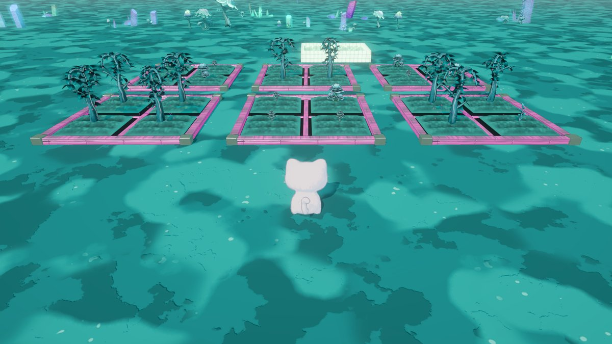
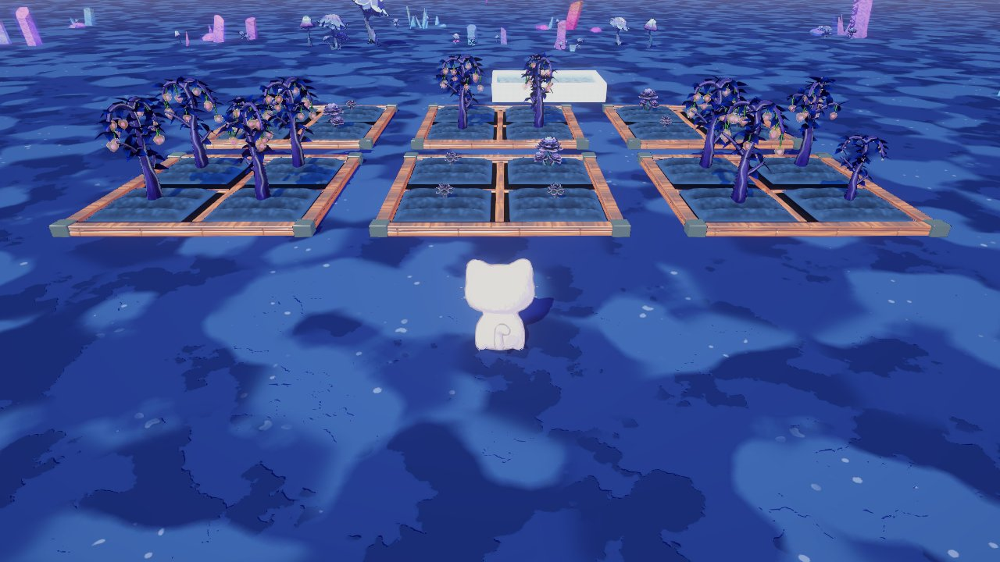
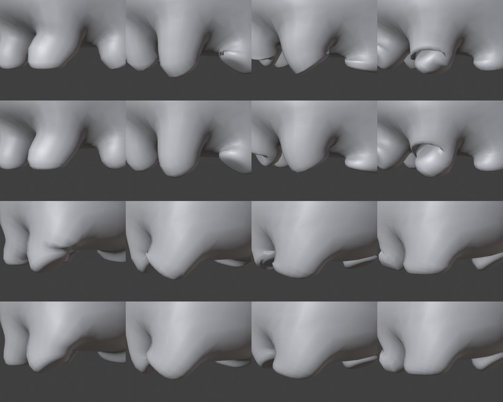
AI가 처음 고친 방법이 틀린 적도 있었습니다. 예를 들어 웨이트를 전체적으로 풀었더니 찌그러짐이 오히려 늘어서, 숫자로 눌린 면을 세어 원인 위치를 찾은 뒤 그 부분만 고쳤습니다.
// 상태: 시작 화면 → 플레이 → (일시 정지) → 성공 / 실패 public enum State { Ready, Playing, Paused, Won, Lost } // 게임 시각: 경과 시간을 오후 2시 ~ 밤 10시로 바꿈 public float Hour => Mathf.Lerp(startHour, endHour, Elapsed / roundSeconds); void Update() { switch (Current) { case State.Ready: // Enter로 시작 if (kb.enterKey.wasPressedThisFrame) Begin(); break; case State.Playing: if (kb.escapeKey.wasPressedThisFrame) { Pause(true); break; } Elapsed += Time.deltaTime; dayNight.hour = Hour; // 배경의 낮/밤 시스템을 시계로 움직임 if (Elapsed >= roundSeconds) SetState(State.Lost); // 밤 10시 = 실패 break; case State.Won: case State.Lost: // R로 다시 하기 if (kb.rKey.wasPressedThisFrame) Restart(); break; } } // 손님이 돈을 낼 때마다 불림 — 목표 금액이면 성공 void OnPaid(int coins, int gained) { if (Current == State.Playing && coins >= goal) SetState(State.Won); } void SetState(State s) { Current = s; Time.timeScale = s == State.Paused ? 0f : 1f; // 일시 정지는 시간을 멈춤 cat.gameLocked = s != State.Playing; // 플레이 중에만 고양이 조작 StateChanged?.Invoke(s); // UI가 패널을 바꿈 }
Elapsed 하나로 재고, 그걸 시각으로 바꿔 하늘에 넘깁니다. 시계 UI도 같은 값을 읽습니다.수확 동작은 끝날 때 고양이 잠금을 풉니다. 게임이 끝난 직후 수확이 마무리되면 결과 화면에서 고양이가 다시 움직였습니다. 그래서 게임 상태 전용 잠금(gameLocked)을 따로 두었습니다.
// DeliveryPoint — 고양이가 열매를 건넬 때 public int Receive(int amount) { if (!IsReady || amount <= 0) return 0; // 손님이 없으면 못 받음 int take = Mathf.Min(amount, Order - Filled); // 주문에 필요한 만큼만 Filled += take; Delivered += take; customerAnimator.SetTrigger("PickUp"); // 손님이 받는 동작 if (Filled >= Order) StartCoroutine(PayAndLeave()); return take; // 남은 건 바구니에 그대로 } IEnumerator PayAndLeave() { int gained = Order * pricePerFruit + orderBonus; Coins += gained; Paid?.Invoke(Coins, gained); // 승패 판정 · "+n원" UI // 받는 동작이 끝날 때까지 기다린 뒤 문으로 걸어감 ... NewLook(); // 코트 · 셔츠 · 바지 색만 바꿈 NewOrder(); // 주문 4~9개 yield return WalkTo(_standPos); // 문에서 걸어 나옴 }
// CatController — 달리기 애니메이션 재생 속도 // 디딘 발은 1배속에서 초당 pawGroundSpeed만큼 땅을 밉니다. // 몸이 그 속도로 나아가면 발이 땅에 붙어 보이므로, // 재생 속도 = 이동 속도 ÷ 발이 미는 속도 float synced = _planarSpeed / Mathf.Max(0.05f, pawGroundSpeed); animator.speed = !moving ? 1f : Mathf.Max(0.5f, synced); // DeliveryPoint — 손님 걷기는 클립의 이동량(루트 모션)만큼만 void OnAnimatorMove() { if (!_walking) return; float step = customerAnimator.deltaPosition.magnitude; Vector3 d = _walkTarget - transform.position; d.y = 0f; // 길 방향으로만, 목표를 넘지 않게 transform.position += d.normalized * Mathf.Min(step, d.magnitude); } // 옷 색 — 재질을 복사하지 않고 렌더러마다 색만 덮어씀 r.GetPropertyBlock(_mpb); _mpb.SetColor(LitId, m.GetColor(LitId) * c); _mpb.SetColor(ShadowId, m.GetColor(ShadowId) * c); r.SetPropertyBlock(_mpb);
손님은 캐릭터 하나를 계속 다시 씁니다. 받는 동작이 끝나기 전에 걷게 했더니 허리를 숙인 채 미끄러져 나가서, 애니메이터가 받는 동작을 벗어날 때까지 기다리도록 고쳤습니다. 걷기 시작 동작이 느리게 출발할 때도 몸이 같이 천천히 나가도록, 클립 자체의 이동량으로 움직입니다.
| 항목 | 내용 |
|---|---|
| 실행 빌드 (PC) | 02_Unity_김기인_빌드.zip — 압축을 풀고 HarvestBeforeNight.exe 실행 (Windows 64bit, 1920×1080). 시작 화면부터 |
| 플레이 영상 | 02_Unity_김기인_플레이영상.mp4 — 1분 22초. 빌드를 -demo 옵션으로 실행해 자동 시연을 Windows 녹화로 촬영 |
| GitHub | https://github.com/kki6700/harvest-before-night — 프로젝트 전체, 스크립트, 개발 기록(Docs/DevLog.md), 과정 이미지 |
| 주요 스크립트 | GameDirector · GameHUD · CatController · CatHarvester · DeliveryPoint · RipeCrop · BasketFill · FollowCamera · DemoAutopilot |